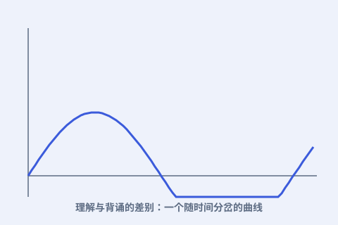

一、《费曼物理学讲义》
1961 年起，他为加州理工的大一学生重讲整套物理学。讲义整理成三卷本，至今仍被全世界学生反复阅读——它讲的不是题型，是物理本身。

二、一杯冰水的证词
1986 年挑战者号失事后，他在调查听证会上把航天飞机的 O 形环泡进一杯冰水，当众演示它在低温下失去弹性——真相就这样被摆上了桌面。
三、底下还有很大空间
1959 年他做了那场著名演讲《底下还有很大空间》，提出可以在原子尺度上操纵物质、把整部百科全书写在一个针尖上——这被视为纳米技术的最早构想。
四、诚实的乐趣
他说“科学的第一原则是：你绝不能骗自己，而你自己恰恰是最容易被骗的人”。他享受“不知道”的状态，认为承认不懂才是思考的起点。